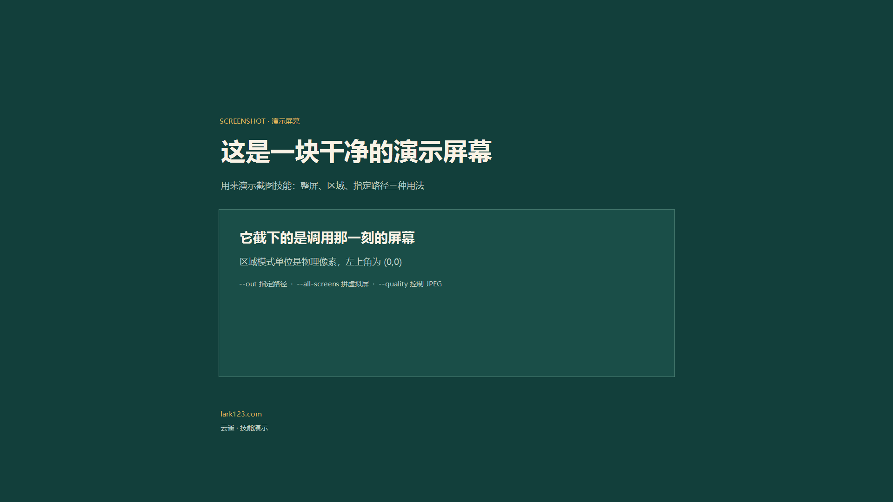
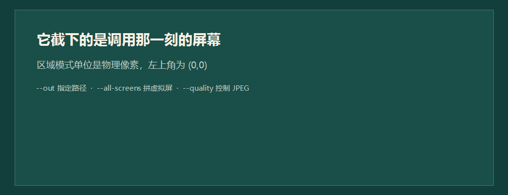

SCREENSHOT / LARK EDITION
把屏幕
变成一张图
一条命令截下桌面、整屏或指定区域，输出 PNG/JPEG 与机器可读的 JSON，供智能体直接接住。不需要安装任何 Python 包。
01调用脚本
02截取画面
03输出 JSON
04归档交付
一条命令截下桌面、整屏或指定区域，输出 PNG/JPEG 与机器可读的 JSON，供智能体直接接住。不需要安装任何 Python 包。
不是「按一下截图键」，而是把屏幕变成可被智能体调用的稳定接口：一条命令、一份 JSON、一个可直接交付的文件路径。
screen.png · 1920×1080 · 395 KB
外加一行 stdout JSON，智能体据此继续读图、标注或上传。
| 这次测出来的问题 | 处理 |
|---|---|
| 参数名容易写成 --output | 正确是 --out，说明书与示例统一 |
| 输出目录不存在 | 脚本会自动建目录，实测通过 |
| 区域四个参数只给一半 | 按文档回退为整屏，不报错 |
lark123.com02 / 08下面这张图，就是本技能自己截的：默认整屏模式，一条命令、没有任何额外参数。

同一次调用返回的 JSON
智能体拿到这行 JSON 就能直接读图、上传或写进报告，不需要再猜文件在哪、多大。
lark123.com03 / 08把整个 screenshot 文件夹放进智能体的技能目录即可。不要只复制 SKILL.md，脚本和 vendor 必须一起带。
Python 3.14 即可，不需要 pip install：Pillow 已经放在 vendor/ 里。
装完先自检
双击发布包里的 自检.ps1：自动截 4 张图并给出 PASS / FAIL，只在临时目录写文件。
lark123.com04 / 081 · 截主屏（最常用）
2 · 指定路径与格式
3 · 截指定区域（物理像素，左上角为 0,0）
4 · 多显示器拼接
| 参数 | 说明 | 默认 |
|---|---|---|
| --out | 输出路径，按后缀决定 PNG / JPEG | 技能目录下带时间戳 |
| --x --y --width --height | 区域左上角与宽高 | 不给 = 整屏 |
| --all-screens | 拼接所有显示器的虚拟屏 | 关 |
| --quality | JPEG 质量 1–100 | 90 |
lark123.com05 / 08同一条命令加上四个坐标参数，就只截出你要的那一块。下面这张是 --x 440 --y 430 --width 1040 --height 400 的结果。

lark123.com06 / 08智能体在电脑上干活，最缺的是「看见」：报错了、页面歪了、用户说「就这个界面」——都需要一张当前的屏幕。
lark123.com07 / 08| 目标 | 要改什么 | 难度 |
|---|---|---|
| Claude Code / Codex | 把脚本路径换成绝对路径，其余照旧 | 低 |
| Cursor / 自研 Agent | 同上；让工具层直接执行这条命令并读 stdout | 低 |
| Dify / Coze 等编排平台 | 包成「代码执行」节点，输入路径参数 | 中 |
| 非 Windows 环境 | 不可用，需换各自的截图实现 | — |
锁屏、远程会话断开或服务模式下截不到，需要前台桌面会话。
参数是 --out。
坐标是物理像素，且四个参数要一起给；多屏先用 --all-screens 确认虚拟屏尺寸。
lark123.com08 / 08